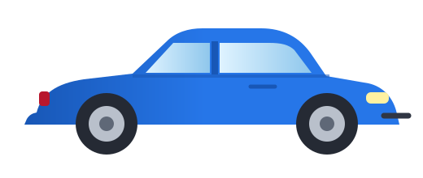

EXPLORA · OBSERVA · COMPRENDEEl movimiento,
El movimiento,
en tus manos.
Cambia las condiciones. Conecta lo que ves con las ecuaciones. Explora MRU, MRUA y movimiento parabólico.
Ir al laboratorio ↓
01 · EXPERIMENTA
Tu experimento
Haz una predicción antes de iniciar.
POSICIÓN
VELOCIDAD
ACELERACIÓN
Δx
Tres miradas al mismo movimiento
✦
¿Qué estás observando?
Rapidez: · Distancia recorrida:
MOVIMIENTO POR TRAMOS
Combina MRU y MRUA.
Cada tramo comienza con la posición y velocidad finales del anterior.
Posición x(t)
Velocidad v(t)
Aceleración a(t)
01B · DOS DIMENSIONES
Lanza, observa y descompone.
Una trayectoria curva; dos movimientos conocidos.
x
y
vₓ
vᵧ
02 · CONECTA LAS IDEAS
Menos memoria. Más significado.
La velocidad se mantiene.
Desplazamientos iguales en tiempos iguales.
x=x₀+v₀tLa velocidad cambia a ritmo constante.
La aceleración es constante.
v=v₀+atUna trayectoria, dos movimientos.
MRU horizontal y MRUA vertical.
v₀ₓ=v₀cosθ¿Aceleración negativa significa frenar?
Depende del signo de v.
v·a<0 → ↓|v|03 · PONLO A PRUEBA
Equivocarte también es parte del experimento.
De observar
a resolver.
Doce ejercicios, a tu ritmo.
0 de 12 resueltos